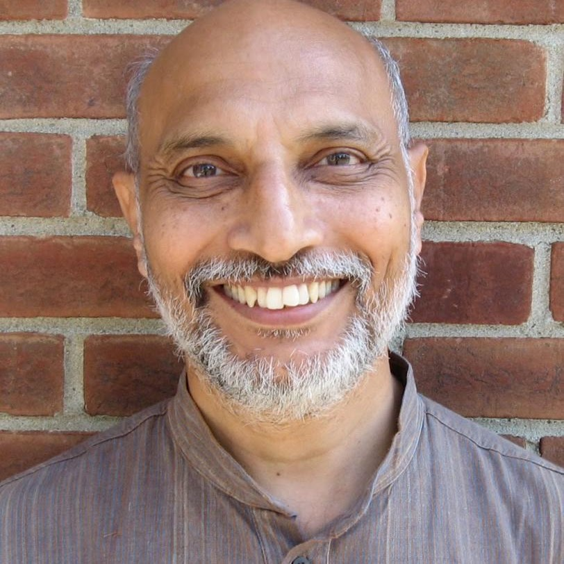
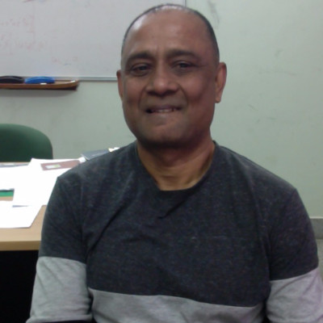
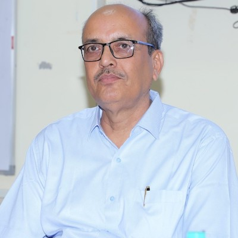
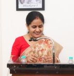
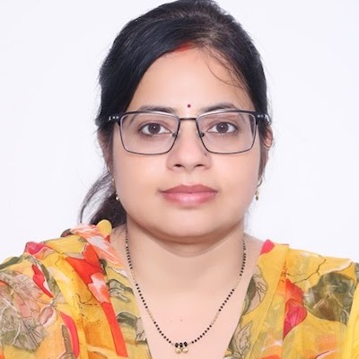
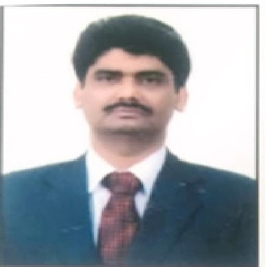

An intellectual sanctuary dedicated to rigorous inquiry, interdisciplinary scientific thought, and the monumental mathematical legacy of Harish-Chandra — bridging foundational physics, harmonic analysis, and contemporary scientific research.
I have often pondered over the roles to be assigned to imagination and reason, and I believe there is a deep similarity between mathematics and poetry.Explore His Journey →
The Harish-Chandra Research Centre at the School of Basic Sciences, Chhatrapati Shahu Ji Maharaj University (CSJMU), Kanpur, was instituted in active academic collaboration with the Indian Institute of Technology Kanpur (IIT Kanpur) to cultivate high-calibre foundational research in basic sciences.
Rooted in Kanpur — the very birthplace of Harish-Chandra — the Centre creates an environment where students, doctoral scholars, and senior faculty engage across disciplinary boundaries to address profound questions in mathematics, theoretical physics, computational sciences, and philosophy of science.
Read Institutional NarrativeAdvancing rigorous mathematical structures, quantum theory, harmonic analysis, and fundamental principles of the physical cosmos.
Fostering inter-institutional colloquia, cross-pollination between CSJMU and IIT Kanpur, and visits by international mathematicians.
Mentoring the next generation of researchers with comprehensive foundational pedagogy, seminars, and specialized research workshops.
Preserving an open, inquisitive intellectual atmosphere where curiosity is cherished, debate is welcomed, and heritage inspires inquiry.
Representing the synergistic academic relationship between CSJMU Kanpur and IIT Kanpur in establishing a living intellectual institute.
The Annual Harish-Chandra Lecture Series convenes world-leading mathematicians, physicists, and scholars to present fundamental discoveries and lecture on invariant principles.
A curated student web experience and digital exhibition celebrating the journey, knowledge, contribution, and inspiration of Harish-Chandra.
An interactive, scholarly journey through the life, education, career, contributions, and enduring international legacy of Harish-Chandra.
A deep assessment of his mathematical architecture, fundamental discoveries, and long-term impact on modern physics and harmonic analysis.
Photographs, manuscripts, institutional correspondence, verified publications, and historical ephemera preserved for research.
Major milestones, turning points, mathematical breakthroughs, and institutional appointments presented in a precision chronological stream.
Explore Harish-Chandra's work categorized across Lie algebras, semisimple groups, differential equations, and automorphic forms with semantic filters.
An intellectual assessment tool testing knowledge of Harish-Chandra's life, peer circle, scientific legacy, and mathematical milestones.
Curated facts, flashcards, archival anecdotes, and concise knowledge cards illuminating the humane, artistic, and disciplined mind.
An interactive institutional map tracing people, universities, research centres, and global mathematicians influenced by Harish-Chandra.
Reflections, scholarly tributes, student impressions, and commemorative messages from the global academic collective.
The official conference microsite with schedule, speakers, student competitions, registration portal, and centenary proceedings.
Bridging 20th-century mathematical breakthroughs with 21st-century developments in quantum information, cryptography, and artificial intelligence.
The flagship virtual pavilion guiding visitors seamlessly through Life, Education, Research, Epistolary Exchanges, and Living Heritage.
Guided by distinguished leadership across CSJMU and IIT Kanpur, mentoring young minds in scientific inquiry.






Digital Legacy 2026 — Student Exhibition Lead and Technical Systems Associate
Archival Research Associate — Biographical Documentation